Лабораторная работа №8. |
АЛГОРИТМЫ ГЕНЕРАЦИИ ОТРЕЗКОВ В РАСТРОВОЙ ГРАФИКЕ
Цель работы: изучить альтернативные алгоритмы отображения отрезков прямых линий в пиксельную матрицу, сравнить характеристики алгоритмов.
Список рекомендуемой литературы
Построение отрезков является наиболее часто используемой задачей растровой графики, поскольку отрезками прямых аппроксимируются объекты искривленной формы. К развертке отрезка предъявляются следующие требования:
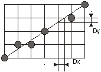
Рис.4. Отклонение траектории от идеального отрезка.
Наиболее известными алгоритмами развертки являются алгоритмы Брезенхема, цифрового дифференциального анализатора (ЦДА) - симметричный и простой.
Симметричный ЦДА. Суть ЦДА заключается в параллельном (одновременном) приращении значений Х- и Y-координат к дробным частям координат предыдущей точки траектории на некоторую малую величину (дифференциал) 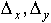 с последующим округлением до ближайших целых значений, т.е. координат пикселов:
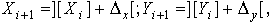
где [ ] - обозначение дробной, а ] [ - целой части.
В симметричном ЦДА величины 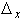 и  выбираются по следующим соотношениям:
выбираются по следующим соотношениям:
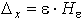;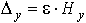,
где  горизонтальная
и вертикальная составляющие отрезка,
горизонтальная
и вертикальная составляющие отрезка,  - коэффициент, равный: 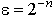, а показатель
степени выбирается из условия:
- коэффициент, равный: 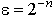, а показатель
степени выбирается из условия:
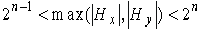, (1)
Такой выбор обеспечивает преимущества метода: контролируется изменение переменных х и у; обеспечивается высокая точность развертки - 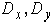 не превышают половины шага пиксельной матрицы. Покажем работу ЦДА на примере. Пусть координаты начала отрезка (в пикселах) составляют 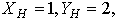 а координата его конца - 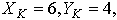 т.е. 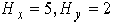.
Вычисляем из условия (1) число шагов
развертки n=3, т.е. коэффициент  =1/8, а приращения
равны: 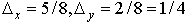.
=1/8, а приращения
равны: 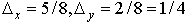.
Тогда координаты точек растровой развертки данного отрезка по шагам приращений представлены в табл.1.
| Шаг | 1 | 2 | 3 | 4 | 5 | 6 | 7 | 8 | 9 |
| Х | 1 | 1 | 2 | 2 | 3 | 4 | 4 | 5 | 6 |
| У | 2 | 2 | 2 | 2 | 3 | 3 | 3 | 3 | 4 |
Простой ЦДА. В алгоритме простого ЦДА
одно из приращений -  или
или  ,
а именно то, которое соответствует более быстро
меняющейся координате (при 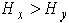 это
,
а именно то, которое соответствует более быстро
меняющейся координате (при 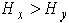 это  ,
а при 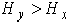 это
,
а при 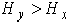 это  ) фиксируется на всех
шагах равный единице, т.е. одна из координат
является обыкновенным счетчиком, а увеличение
другой координаты развертки определяется в
соответствии с приведенным ниже алгоритмом.
) фиксируется на всех
шагах равный единице, т.е. одна из координат
является обыкновенным счетчиком, а увеличение
другой координаты развертки определяется в
соответствии с приведенным ниже алгоритмом.
Процедура ЦДА (
 :
целые);
:
целые);
Переменные ДЛИНА, I:целые; X,Y,ПРИРАЩЕНИЕ_X, ПРИРАЩЕНИЕ_ Y:Вещественные;
Начать (
Длина :=ABS( );
);
Если ABS(  ) > ДЛИНА то
ДЛИНА:= ABS(
) > ДЛИНА то
ДЛИНА:= ABS( );
);
ПРИРАЩЕНИЕ_X:= ( )
/ ДЛИНА;
)
/ ДЛИНА;
ПРИРАЩЕНИЕ_ Y:= ( )
/ ДЛИНА;
)
/ ДЛИНА;
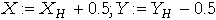;
Цикл I:=1 до ДЛИНА;
Начать
Вывести (Целая часть (X), Целая часть (Y));
X:=X+ ПРИРАЩЕНИЕ_X;
Y:=Y+ ПРИРАЩЕНИЕ_ Y;
Конец;
Конец;
Точность простого ЦДА равна симметричному, но он генерирует другую последовательность точек растра. Он отличается более простой логикой.
Для примера отрезка, приведенного в симметричном ЦДА, координаты пикселов, вычисленных по простому ЦДА, приведены в табл.2.
Таблица 2.
| Шаг | 1 | 2 | 3 | 4 | 5 | 6 |
| Х | 1 | 2 | 3 | 4 | 5 | 6 |
| У | 2 | 2 | 3 | 3 | 4 | 6 |
Алгоритм Брезенхема. Для него характерно сходство с простым ЦДА, поскольку на каждом шаге значение более быстроменяющейся координаты возрастает на единицу, а второй - либо меняется, либо остается прежним.
Погрешность каждой очередной рассчитанной точки растра равна расстоянию от нее до идеального отрезка в направлении, перпендикулярном более быстроменяющемуся (рис.2. ).
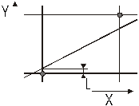
Рис.2. Погрешность в алгоритме Брезенхема
Суть алгоритма заключается в том, что на каждом шаге построения развертки коэффициент наклона 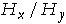 суммируется с ошибкой L. Предварительно анализируется знак L, по которому определяется, должна ли измениться координата текущей точки. Если идеальный отрезок выше текущей точки, то Y=Y+ПРИРАЩЕНИЕ_Y, а из погрешности L вычитается единица. Если точка выше идеального отрезка, то Y не меняется. Ниже приведено описание алгоритма:
Процедура БРЕЗЕНХЕМ 
 :
целые);
:
целые);
Переменные X,Y,  :
Целые; L: Вещественное;
:
Целые; L: Вещественное;
Начать
L:=( ) - 0,5;
) - 0,5;
Цикл I:=1 до 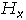
Вывести (X,Y);
Если L>0 то
Y:=Y+1;
L:=L-1;
Конец;
X:=X+1;
L:=L+( );
);
Конец;
Недостатком алгоритма является многочисленное деление. Для примера, рассмотренного в ЦДА, последовательность точек растра имеет следующие координаты (табл. 3):
Таблица 3.
| Шаг | 1 | 2 | 3 | 4 | 5 | 6 |
| Х | 1 | 2 | 3 | 4 | 5 | 6 |
| У | 2 | 2 | 3 | 3 | 4 | 4 |
Список рекомендуемой литературы